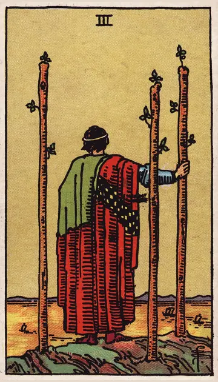

正位置ワンドの3の正位置
キーワード：前進・見通し・広がり
恋愛
関係が前に進み、先の見通しが立つ時です。
相手の気持ちあなたとの関係に、明るい見通しを感じているようです。
この先関係が順調に進んでいきそうです。
アドバイス相手を信じて、少し長い目で見守りましょう。
気をつけること先ばかり見て、今の相手をおろそかにしないように。
この先関係が順調に進んでいきそうです。
アドバイス相手を信じて、少し長い目で見守りましょう。
気をつけること先ばかり見て、今の相手をおろそかにしないように。
人間関係
人とのつながりが広がっていく時です。
相手の気持ちあなたと一緒に、もっと先へ進みたいと感じているようです。
この先遠くからの良い知らせや、新しい縁がありそうです。
アドバイス遠くの人や、新しい分野の人とも交流してみましょう。
気をつけること手を広げすぎて、身近な人との時間が減らないように。
この先遠くからの良い知らせや、新しい縁がありそうです。
アドバイス遠くの人や、新しい分野の人とも交流してみましょう。
気をつけること手を広げすぎて、身近な人との時間が減らないように。
仕事・学業
努力の成果が見え始め、次の展開が期待できる時期です。
この先準備してきたことが、実を結び始めそうです。
アドバイス視野を広げて、次のチャンスに備えましょう。
気をつけること期待しすぎて、準備を怠らないように。
アドバイス視野を広げて、次のチャンスに備えましょう。
気をつけること期待しすぎて、準備を怠らないように。
お金
準備してきたことが、お金につながり始める時です。
この先努力が、収入として返ってきそうです。
アドバイス次の収入の機会に向けて、準備を続けましょう。
気をつけること入る前から、使う予定を立てないように。
アドバイス次の収入の機会に向けて、準備を続けましょう。
気をつけること入る前から、使う予定を立てないように。
生活
暮らしの見通しが、明るく開けていく時です。
この先楽しみな予定が決まりそうです。
アドバイス少し先の楽しみを、予定に入れましょう。
気をつけること先のことばかり考えて、今をおろそかにしないように。
アドバイス少し先の楽しみを、予定に入れましょう。
気をつけること先のことばかり考えて、今をおろそかにしないように。
今日の運勢
先の楽しみが見えてくる日です。
この先うれしい知らせが届きそうです。
アドバイス少し先の予定を、楽しみに立ててみましょう。
気をつけること待つばかりにならないように。
アドバイス少し先の予定を、楽しみに立ててみましょう。
気をつけること待つばかりにならないように。
逆位置ワンドの3の逆位置
キーワード：遅れ・期待外れ・足踏み
恋愛
思っていたより進展が遅く、もどかしい時です。
相手の気持ちあなたとの関係を進めるタイミングを、迷っているようです。
この先時間はかかっても、少しずつ進みそうです。
アドバイス相手のペースを尊重し、気長に待ちましょう。
気をつけること焦って相手を責めないように。
この先時間はかかっても、少しずつ進みそうです。
アドバイス相手のペースを尊重し、気長に待ちましょう。
気をつけること焦って相手を責めないように。
人間関係
期待していた反応が、返ってこない時です。
相手の気持ちあなたの期待に応えられるか、気にしているようです。
この先待っていれば、自然と反応が返ってきそうです。
アドバイス期待を少し手放して、自然体で接しましょう。
気をつけること思いどおりにならないことを、根に持たないように。
この先待っていれば、自然と反応が返ってきそうです。
アドバイス期待を少し手放して、自然体で接しましょう。
気をつけること思いどおりにならないことを、根に持たないように。
仕事・学業
計画に遅れが出やすい時期です。
この先調整すれば、遅れを取り戻せそうです。
アドバイス遅れの原因を確かめ、計画を調整しましょう。
気をつけること見切り発車で進めないように。
アドバイス遅れの原因を確かめ、計画を調整しましょう。
気をつけること見切り発車で進めないように。
お金
入る予定のお金が、遅れやすい時です。
この先少し遅れても、入ってきそうです。
アドバイス入金の予定を、確かめておきましょう。
気をつけること見込みのお金を、先に使わないように。
アドバイス入金の予定を、確かめておきましょう。
気をつけること見込みのお金を、先に使わないように。
生活
予定が延びたり、進まなかったりしやすい時です。
この先少し遅れても、進んでいきそうです。
アドバイス予定には、余裕を持たせましょう。
気をつけることイライラを周りにぶつけないように。
アドバイス予定には、余裕を持たせましょう。
気をつけることイライラを周りにぶつけないように。
今日の運勢
待っていたことが、なかなか進まない日です。
この先近いうちに、状況が動きそうです。
アドバイス待ち時間を、自分のために使いましょう。
気をつけることイライラを周りにぶつけないように。
アドバイス待ち時間を、自分のために使いましょう。
気をつけることイライラを周りにぶつけないように。
このページの文章は、アプリ「ひとやすみタロット」の結果に使っている文章です。アプリでは、あなたの相談や、カードが出た位置（今の状況・これからの流れ・アドバイス）に合わせて、この中から文章を選びます。逆位置の読み方は逆位置のことをご覧ください。
「ワンドの3」が出たら、あなたの相談ではどう読む？
アプリでは、質問への答えに合わせて、カードの言葉をあなたの相談に合わせて届けます。
Android 対応・会員登録なし